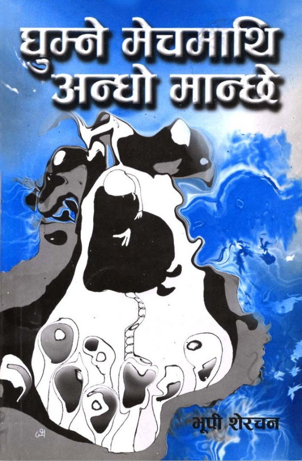

This page walks through a Linux-first workflow for converting scanned Devnagari or Hindi PDF pages into editable text, and then into a Word document. The goal here is practical: install only what is needed, check that the Hindi OCR data is actually available, test on one image first, and then run the full PDF pipeline cleanly.
Step 1: Install Tesseract and the Hindi OCR Language Pack
The first thing is to have Tesseract itself installed, along with the Hindi language pack. This is the part that matters most. Without the Hindi OCR data, the command may run, but it will not properly recognize Devnagari text.
On Ubuntu, this is the clean starting point:
sudo apt update
sudo apt install tesseract-ocr
sudo apt install tesseract-ocr-hinIf a user wants a single combined install line later, that is fine too, but splitting it like this makes it easier to see whether the Hindi package is the missing piece.
Step 2: Run Basic Checks Before Doing Any OCR
Before touching the PDF, do two quick checks. First, confirm the version. Second, list the available OCR languages. This is often where Linux configuration issues show up.
tesseract --version
tesseract --list-langs
What you want to see is that Tesseract is installed, and that hin appears in the language list. If hin is missing, install tesseract-ocr-hin again and check once more.
Step 3: Do a Quick One-Image OCR Test First
A quick test on one PNG image is worth doing. It tells you right away whether Hindi OCR is basically functioning on your machine. This is especially helpful before you bring in PDF conversion and batch processing.
tesseract /home/naresh/Pictures/Screenshots/bhupi1.png output -l hin
That creates a file named output.txt in the current directory. If that works, then the OCR engine and Hindi language data are basically in place.
Step 4: Install the Extra PDF and DOCX Utilities
Once the OCR engine itself is working, the next useful tools are:
poppler-utils for turning PDF pages into PNG images,pandoc for converting the final text output into a Word document.sudo apt install tesseract-ocr tesseract-ocr-hin poppler-utils pandocThis line is slightly redundant if the first packages are already installed, but it is still a clean “all required tools” command for other readers.
Step 5: Move Into the Working Directory and Extract the PDF into PNG Pages
Once the PDF is ready, go to the folder where you want the output to live, create a pages folder, and convert the scanned PDF into one PNG file per page.
cd /home/naresh/Documents
mkdir -p bhupi_pages
pdftoppm -png BhupiSherchan_GhumneMechMathi.pdf bhupi_pages/page
After that, the folder bhupi_pages should contain PNG files such as page-1.png, page-2.png, and so on.
Step 6: Run OCR Across All Extracted Pages
This is the main batch OCR step. It loops through each page image, runs Hindi OCR, and appends the recognized text into a single text file, with a visible page break marker in between.
cd /home/naresh/Documents
rm -f bhupi_ocr.txt
for f in bhupi_pages/*.png; do
echo "Processing: $f"
tesseract "$f" stdout -l hin --psm 6 >> bhupi_ocr.txt
printf "\n\n==== PAGE BREAK ====\n\n" >> bhupi_ocr.txt
done
The use of stdout is helpful here because it sends the OCR text directly into the combined output file. The option --psm 6 is a useful starting page segmentation mode for scanned text blocks.
Step 7: Convert the OCR Text File into a Word Document
After the OCR text is collected in one file, the next step is straightforward. Use pandoc to convert the text file into a Word document.
pandoc bhupi_ocr.txt -o BhupiSherchan_GhumneMechmathi.docxAt that point, you have both a plain text OCR output and a Word document version that can be edited further.
Step 8: Extra Checks if the OCR Looks Strange
A few extra checks can save time when the command runs but the output is still poor:
hin is in tesseract --list-langs.tesseract --version
tesseract --list-langs
ls bhupi_pages
head -n 40 bhupi_ocr.txtFor readers who want the whole workflow in one place, this is the compact version:
sudo apt update
sudo apt install tesseract-ocr tesseract-ocr-hin poppler-utils pandoc
tesseract --version
tesseract --list-langs
cd /home/naresh/Documents
mkdir -p bhupi_pages
pdftoppm -png BhupiSherchan_GhumneMechMathi.pdf bhupi_pages/page
rm -f bhupi_ocr.txt
for f in bhupi_pages/*.png; do
echo "Processing: $f"
tesseract "$f" stdout -l hin --psm 6 >> bhupi_ocr.txt
printf "\n\n==== PAGE BREAK ====\n\n" >> bhupi_ocr.txt
done
pandoc bhupi_ocr.txt -o BhupiSherchan_GhumneMechmathi.docxI will be testing out other OCR tools in Linux, specifically for Devnagari script. I will also provide examples of bad OCR versus cleaned OCR and optional preprocessing for difficult scans.